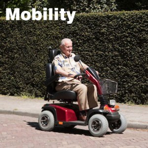
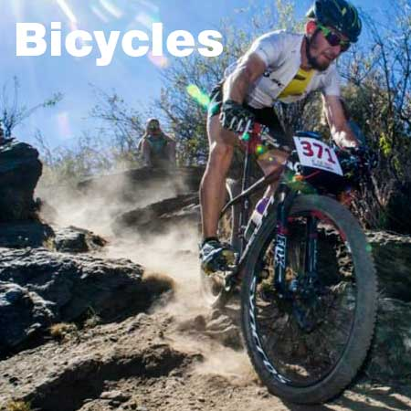

In the past, motorbike riders have had a raw deal. They have been offered tyre sealants that do not properly suit their machines. Now all that has changed. OKO offers not one but Three different types of tailored
motorcycle tyre sealant.
MORE >
Driving a tractor over a ploughed field or a forklift over rough terrain, you’ll be glad you installed the original and best off road tyre sealant.
OKO Puncture Free Off Road can be found in the toughest environments in the World, so there’s nowhere that it won’t go.
MORE >
For fleet owners and the commercial tyre specialists that supply them, an effective truck puncture prevention system has become essential. No-one can afford to miss a just-in-time delivery: downtime prevents successful operation.
MORE >
It can be tough out on the road. Van drivers have deadlines to keep. Caravans can be deadly if they get a puncture. 4x4s have to face on and off road conditions. Car owners often have no spare wheel. The answer is OKO Puncture Free ‘LCV’ On Road.MORE >

When you have a mobility scooter or wheelchair, you have no spare wheel. You often have to ride over pavements and road gutters littered with sharp objects. You need OKO assistance.
MORE >

Bike users told us that there was a gap in the market. Many riders have discovered the need for a bike tyre sealant, but conventional latex-based bike sealants dry out rapidly and need to be replaced. Not so with OKO…
MORE >